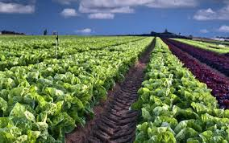

About MK Enterprises
Supplying quality agricultural products with integrity and consistency.
We are a trusted distributor and supplier of agricultural staples, focusing on grains and fresh produce. Our network spans farms, mills, and logistics partners to ensure dependable quality and on-time fulfillment.
Our Mission
To connect growers and markets through ethical sourcing and operational excellence.
Our Values
Reliability, transparency, sustainability, and long-term partnerships.
Our Promise
Consistent grades, compliant packaging, and responsive communication.
Our Journey
From humble beginnings working closely with local farms, MK Enterprises has grown into a multi-product supplier. We continuously improve storage, handling, and documentation to meet evolving customer needs.
